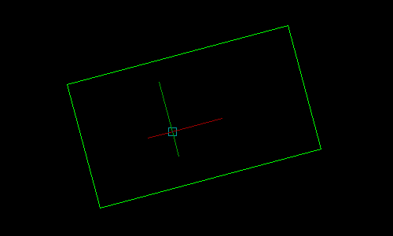

Draw Grid
This page is delivered for consistency purposes only, as part of the LeeMac sample module of DynALisp, which shows how DynALisp turns existing AutoLISP programs into a module. The program and its description are the work of Lee Mac, who keeps all the credit for them. The original page, with the latest version, is on Lee Mac's website: https://lee-mac.com/drawgrid.html
| Function Syntax | LM-DrawGrid – original syntax: DGrid / DGridD (dynamic) (see aliases) |
| Current Version | 1.1 |
| Compatible with AutoCAD for Mac? | Yes |
| Compatible with AutoCAD LT? | Yes |
| Original Page | lee-mac.com/drawgrid.html |
Program Description
This program will prompt the user for a number of rows and columns then proceed to construct a grid composed of Line Entities between two corner points.
If called with 'DGrid' (Draw Grid) at the AutoCAD command-line, the program will operate in standard mode, with all standard AutoCAD functionality (such as Object Snap / Tracking / Orthomode etc.) available to the user.
If called with 'DGridD' (Draw Grid Dynamic) at the AutoCAD command-line, the program will display a real-time preview of the grid constructed between the two corner points; however, Object Snap is imitated during the preview, and most other AutoCAD functionality (such as Tracking / Orthomode etc.) is unavailable in this mode.
The program will remember the last used number of rows and columns during the active drawing session, and these values will be available as defaults for the next use.
Both program modes (standard / dynamic) have been engineered to work in all UCS/Views.
Demonstration of Dynamic Version

Bundled program notes
;;-----------------------=={ Draw Grid }==--------------------;;
;; ;;
;; Dynamically generates a grid with a specified number of ;;
;; rows and columns. ;;
;; Works in all UCS/Views. ;;
;;------------------------------------------------------------;;
;; Author: Lee Mac, Copyright © 2011 - www.lee-mac.com ;;
;;------------------------------------------------------------;;
;; Version 1.1 - 13-10-2011 ;;
;;------------------------------------------------------------;;
Command Names And Aliases
As in every DynALisp module, each program of this sample module has one main command, named LM-*, and the original command names of Lee Mac's page are kept as its aliases: they run the same command, and can be added, renamed or removed in Dyl-Suite (saved in Resources\Aliases.csv). The rows marked ↳ are child commands of LM-DrawGrid: they are run by their alias, or picked from LM-DrawGrid when it lists them (their command is named Pst-*).
| Command | Aliases | Name |
|---|---|---|
| LM-DrawGrid | DGRID | Draw Grid |
| ↳ DGRIDD | – | Draw Grid Dynamic |